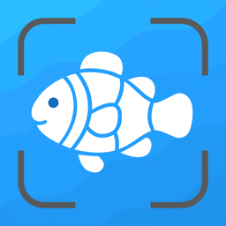

In de wereld van iOS-apps is How to Use Fish Identifier een uitstekende keuze. Een onmisbare tool voor je iPhone.
Was ist How to Use Fish Identifier?
Een onmisbare tool voor je iPhone.

How to Use Fish Identifier
⭐️⭐️⭐️⭐️⭐️ Beoordeeld met 4.8 sterren in de App Store
Downloaden voor iPhone & iPadFeatures
- iOS: Runs perfectly.
- UX: Simple design.